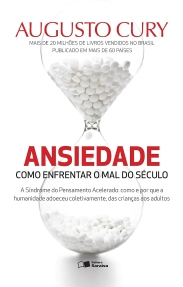
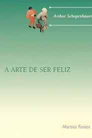

Cuidar da mente
é cuidar da vida.
Um espaço acolhedor para entender, refletir e agir sobre seu bem-estar emocional.
O que é saúde mental?
Saúde mental é o equilíbrio que nos permite lidar com emoções, enfrentar desafios, tomar decisões e construir relações saudáveis. Ela envolve como pensamos, sentimos e agimos no dia a dia — vai muito além da ausência de doenças.
Por que cuidar?
Quando negligenciada, a saúde mental afeta trabalho, estudos e relacionamentos. Hábitos como exercícios, sono adequado, alimentação equilibrada e apoio social são fundamentais para proteger seu bem-estar emocional.
Reconhecendo sinais
Tristeza excessiva, dificuldade de concentração, irritabilidade ou isolamento podem ser sinais de alerta. Mudanças no apetite, sono e energia também merecem atenção. Reconhecer esses sinais é o primeiro passo.
Mente e corpo unidos
A conexão entre mente e corpo é real. Estresse emocional pode causar dores físicas, insônia e palpitações. Pessoas com boa saúde mental se recuperam mais rápido de doenças e vivem com mais qualidade.
Mitos & Fatos
A saúde mental ainda carrega muito estigma. Conhecer a verdade é o primeiro passo para combatê-lo.
"Quem vai ao psiquiatra é louco."
Muitas pessoas buscam ajuda para ansiedade, depressão e estresse — condições comuns e tratáveis. Ir ao psiquiatra é um ato de autocuidado.
"Pessoas com doenças mentais são perigosas."
A esmagadora maioria das pessoas com transtornos mentais não é violenta. Este estigma não tem base na realidade e causa muito dano.
"Depressão é só tristeza e passa sozinha."
A depressão é uma condição médica séria que afeta toda a vida de uma pessoa. Ela requer tratamento adequado e não desaparece sem ajuda.
"Terapia é para quem é fraco."
Buscar terapia é um sinal de força e autocuidado. Todos podem se beneficiar, seja para lidar com dificuldades ou para crescer pessoalmente.
"Se tiver uma vida boa, não há problemas mentais."
Saúde mental não depende apenas de fatores externos. Genética, histórico e bioquímica cerebral influenciam — independente das condições de vida.
"Quem tem transtorno mental não pode ter vida normal."
Com tratamento adequado, muitas pessoas com transtornos mentais vivem plenamente, com relacionamentos saudáveis e carreiras bem-sucedidas.
"Criança não tem problema de saúde mental."
Crianças e adolescentes também enfrentam ansiedade, depressão e outros transtornos. O diagnóstico precoce é fundamental para o tratamento.
"Remédios psiquiátricos são todos viciantes."
A maioria dos medicamentos psiquiátricos não causa dependência. Usados com supervisão médica, são ferramentas seguras e eficazes de tratamento.
"Saúde mental é coisa de adulto — jovem não precisa se preocupar."
75% dos transtornos mentais se desenvolvem antes dos 24 anos. Cuidar da saúde mental desde cedo é fundamental para um desenvolvimento saudável e uma vida mais equilibrada.
Superar o estigma começa por entender que qualquer pessoa pode enfrentar dificuldades emocionais — assim como enfrenta problemas físicos. Falar abertamente sobre saúde mental, ouvir sem julgamento e buscar informações corretas são passos essenciais para criar uma sociedade mais empática e acolhedora.
Autoajuda
Pequenas atitudes diárias fazem grande diferença no seu bem-estar emocional.
Exercite-se
Atividade física libera endorfinas que melhoram o humor e reduzem o estresse. Mesmo uma caminhada de 20 minutos já faz diferença.
Durma bem
O sono é essencial para o funcionamento do cérebro e para regular as emoções. Priorize 7 a 9 horas por noite.
Escreva seus sentimentos
Colocar emoções no papel ajuda a processá-las. Mantenha um diário de gratidão ou escreva sobre o que está sentindo.
Pratique mindfulness
Meditação e atenção plena reduzem a ansiedade e aumentam o foco. Comece com apenas 5 minutos por dia.
Cuide da alimentação
Uma dieta equilibrada, rica em nutrientes e com boa hidratação, contribui diretamente para o equilíbrio emocional.
Converse com alguém
Compartilhar o que você está sentindo com uma pessoa de confiança alivia o peso emocional e fortalece vínculos.
Expresse-se criativamente
Desenhar, pintar, tocar um instrumento ou escrever são formas poderosas de processar emoções e aliviar tensões internas.
Faça pausas digitais
Reduzir o tempo nas redes sociais diminui comparações e ansiedade. Reserve momentos do dia para ficar longe das telas.
📚 Leituras recomendadas
Clássico sobre a importância de viver no presente e lidar com a mente agitada através de práticas e reflexões.

Abordagem prática sobre o impacto da ansiedade e ferramentas para controlá-la no dia a dia.
Explicação clara sobre como a ansiedade afeta a vida e como gerenciar pensamentos de forma mais saudável.

Reflexões filosóficas profundas sobre felicidade e equilíbrio interior para a vida cotidiana.
Reflexão sobre a importância de reconhecer o próprio valor e lidar com adversidades de forma saudável.
Aborda como a vulnerabilidade e a aceitação das próprias imperfeições são fundamentais para uma vida com mais coragem, conexão e alegria.
🎬 Canais no YouTube
Dicas sobre ansiedade, depressão, autoestima e desafios emocionais.
Saúde mental, autocuidado, autoestima e técnicas de relaxamento.
Práticas de mindfulness e meditação para reduzir estresse e melhorar o foco.
Orientação sobre desafios emocionais e promoção de uma vida equilibrada.
Saúde mental e qualidade de vida com práticas acessíveis do cotidiano.
Suporte Emocional
Ninguém precisa enfrentar dificuldades sozinho. Pedir ajuda é um ato de coragem.
Família & Amigos
Quando nos sentimos compreendidos por pessoas próximas, nossa autoestima e confiança aumentam. Vínculos afetivos oferecem conforto e um espaço seguro para expressar sentimentos sem medo de julgamento.
Apoio Profissional
Psicólogos trabalham com terapias para ajudar a entender sentimentos e comportamentos. Psiquiatras são médicos especializados em saúde mental e podem prescrever medicamentos quando necessário.
Serviços Online & Gratuitos
O CAPS (Centro de Atenção Psicossocial) oferece tratamento gratuito para pessoas com transtornos mentais. ONGs e centros comunitários também oferecem apoio a baixo custo em diversas cidades.
💬 Como pedir apoio?
Reflita sobre suas emoções. Escrever sobre elas pode ajudar a clarear o que está acontecendo internamente.
Comece falando com um amigo ou familiar próximo. Um ambiente seguro facilita a abertura emocional.
Não tenha medo de expressar o que está sentindo, mesmo que seja difícil ou confuso. A honestidade acelera o processo de cura.
Se os sentimentos persistirem ou afetarem sua vida, um psicólogo pode oferecer suporte especializado e direcionado.
Teste Psicológico
Uma ferramenta de autoavaliação para refletir sobre seus sentimentos. Não substitui avaliação profissional.
📋 Como responder
- Leia cada pergunta com atenção e pense nos últimos dias
- Escolha a opção que melhor reflete o que você tem sentido
- Seja honesto consigo mesmo — não há resposta certa ou errada
📎 Referências Bibliográficas
Conteúdo geral sobre saúde mental:
- ORGANIZAÇÃO MUNDIAL DA SAÚDE (OMS). Mental health: strengthening our response. Geneva: WHO, 2022. Disponível em: who.int/news-room/fact-sheets/detail/mental-health-strengthening-our-response
- MINISTÉRIO DA SAÚDE. Saúde Mental. Brasília: MS, 2023. Disponível em: saude.gov.br
- AMERICAN PSYCHIATRIC ASSOCIATION. Diagnostic and Statistical Manual of Mental Disorders (DSM-5). 5. ed. Arlington: APA, 2013.
- CURY, Augusto. Ansiedade: como enfrentar o mal do século. São Paulo: Saraiva, 2014.
- SILVA, Ana Beatriz Barbosa. Mentes ansiosas: medo e ansiedade nossos de cada dia. Rio de Janeiro: Objetiva, 2011.
- TOLLE, Eckhart. O poder do agora: um guia para a iluminação espiritual. São Paulo: Sextante, 2002.
- BROWN, Brené. A coragem de ser imperfeito. Rio de Janeiro: Sextante, 2013.
Teste psicológico:
- KROENKE, K.; SPITZER, R. L.; WILLIAMS, J. B. W. The PHQ-9: validity of a brief depression severity measure. Journal of General Internal Medicine, v. 16, p. 606–613, 2001. (Adaptado para fins educacionais.)
- SPITZER, R. L. et al. A brief measure for assessing generalized anxiety disorder. Archives of Internal Medicine, v. 166, n. 10, p. 1092–1097, 2006. (GAD-7, adaptado para fins educacionais.)
⚠️ O questionário presente neste site é uma adaptação educacional de instrumentos validados de autoavaliação em saúde mental e não substitui diagnóstico clínico.